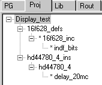

March 2002
LCD controle
Most alfa-numeric LCD displays are controled by the Hitachi HD44780U with ROM Code A00 or compatible.
I used LCD from Anag Vision (sold by Conrad) with the KS0066 controler, which seems completly compatible.
Here you can find the datasheet at Hitachi .
Special attention
Based on some files of Wouter (thanks Wouter !!), especially HD44780*.JAL and E0005.JAL, a extended library for LCD control was written, with the following features:
Basically the routines were written and tested on a 2*16 display, but they should also work on other configurations.
The IO-interface is always 4 bit, because with PICs there's always a short of IO-pins.
Shifting is always done right (incrementing), because this is the only meaningfull direction for western languages.
Other sources for LCD routines:
|
Library for the control of an alfa-numeric LCD (2 lines), controlled by the HD44780 or equivalent HD44780_4_INS, contains the definitions of the IO-pins (totally random), the definition of the strings tables (2 tables implemented) and the character-definition table. The file also includes automatically HD44780_4. The example contains a complete package of files to test the routines on a 16F628. |
|
 |
On the left is complete dependancy list of all the files in the example. The zip files contains all these files (without directory paths).
|
|
Control |
Lines |
Normal writing |
Fancy |
|
LCD_cursor = on LCD_blink = on LCD_display = on LCD_define_character |
LCD_cursor_pos = 12 LCD_shift_left LCD_shift_right LCD_clear_line |
LCD_char = "A" LCD_char_pos LCD_char_line_pos LCD_display_string |
LCD_scroll_string_init LCD_scroll_string LCD_animate1 LCD_animate2 LCD_animate3 |
After initialization, display, cursor and blink are all on. With the pseudo variables LCD_display, LCD_cursor and LCD_blink these settings can be changed at any moment.
The pseudo var LCD_cursor_pos, sets the cursor at the selected position, defining the position where the next character will be written. This cursor position can be placed outside the visible area of the display !
With the procedure LCD_clear_line ( linenr ) the line LINENR (0..) is cleared and the cursor is positioned at the first location of that line, so next writing will start at the beginning of that line.
For a single character the pseudo variable LCD_char can be used, this will place the selected character at the current cursor location.
With LCD_char_pos ( ASCII , position ) you can place the character ASCII at any position (also outside the visible area) of the display.
A more convenient way to place a character at a specific location is done with LCD_char_line_pos ( ASCII , linenr, position ), also here it's still possible to place the character outside the visible area of the display.
A complete string from one of the predefinied string tables can be placed at the current cursor positions with LCD_display_string (table, stringnr). Although the start of the string can be outside the visible area of the display, once it's in the visible area, it will stay there and roll over to the next line.
The string tables are definied in HD44780_4_INS and consists of simple jump tables, containing the strings, where each string is closed with a NULL character. At the moment 2 tables (giving a maximum of approximatly 500 bytes ) are definied, but this can easily expanded.
If the second table is not used, the great JAL compiler will not generate any code for it.
The character rom leaves 8 character positions for user definable characters.
By defining the layout of these characters in a predifined jump table (located in HD44780_4_INS) it's easy to generate your own characters or even animations. With the procedure LCD_define_character ( characterROMlocation, stringnumber) they are loaded in the character ROM and are ready for normal use. This construction is choozen, for the reason taht if you don't use them, they will occupy no code space.
Scrolling doesn't look very good on a LCD display, because of the slow response time (maximum is about 200 ms).
The integrated shift functions are quiet restricted, it's only possible to shift all lines at once.
To use this integrated shift option, the procedures LCD_shift_right and LCD_shift_right are implemented.
There's also a routine to rotate a string nicely in the upper line.
Start with calling LCD_scroll_string_init ( table, stringnr ), where table is one of the predefinied string tables in HD44780_4_INS and the stringnr is the number of the string in this table, then call on a regular base (i.e. 300 ms) LCD_scroll_string, and the string will rotate nicely (filled with spaces at the start and the end around in the upper line of the display.
Animations can be made by regular changing the contents of the user definable characters, at ASCII locations 0 .. 7.
Calling of these routines at regular intervals must be done by the main program (in a program loop or by an interval timer)
Here are some examples (made by my son Robbert), using different technics to generate the character lines.
|
LCD_animate1: growing / decreasing stack (uses 24 words) animation by direct writing of calculated values to the character generator rom |
LCD_animate2 : rotating line (uses 60 words) animation by direct writing of (partial) table values to the character generator rom |
LCD_animate3 : winking smiley (uses 31 words) animation by direct writing of fixed values to the character generator rom |